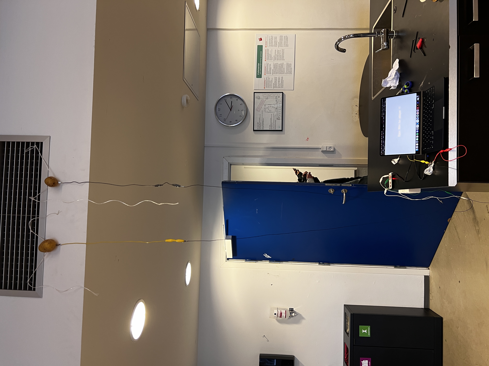
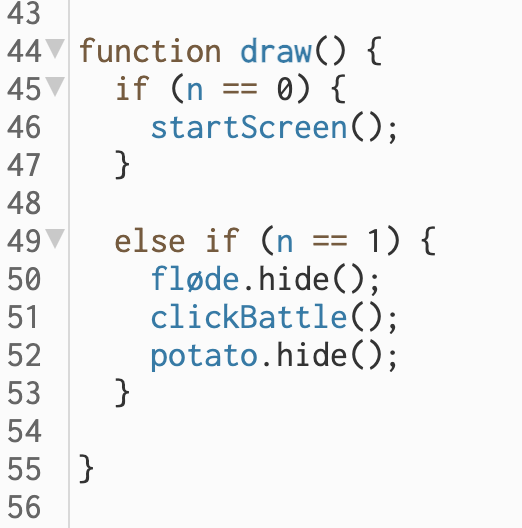
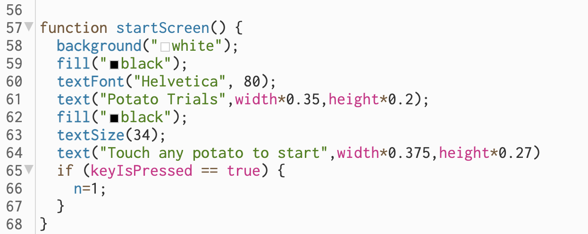
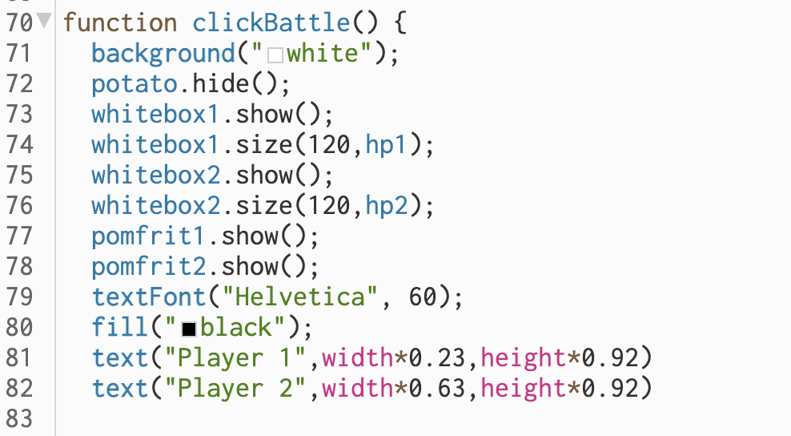
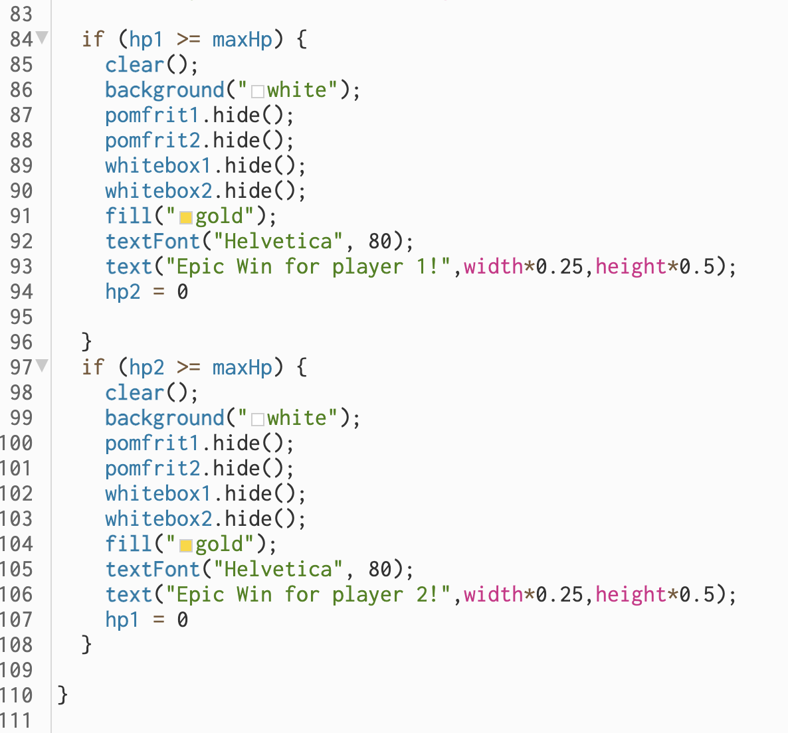
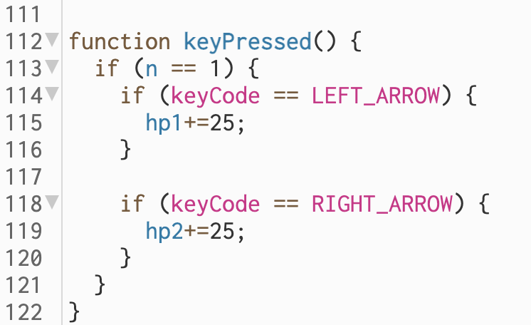

I forløbet "spil, leg og samarbejde" havde vi på forhånd fået givet en case af Dansk idtrætsforbund. En undersøgelse viser at 3/4 børn og unge ikke bevæger sig nok i hverdagen, og det mistænkes at stillesidende skærmtid spiller en afgørende rolle. Derfor ønsker de at motivere flere børn og unge til at bevæge sig mere, samt til at være mere sociale, når de spiller computerspil. Ud fra denne undersøgelse skulle vi i forløbet udvikle et spil i p5.js der overholdt følgende sprecifikationer:
- Skal kunne spilles af 2 eller flere personer der fysisk er i nærheden af hinanden.
- Involvere et enten samarbejdende eller konkurrerende element, gerne inspireret af sport.
- Styres af makey makey og altså ikke direkte fra computeren og tastaturet.
Ud fra disse specifikationer udviklede vi vores spil "potato trials", som i nedenstående grundigt er gennemgået.
Vi havde en målsætning om at udvikle et spil der gennem et konkurrerende element skulle tiltrække spillere. Spillet skulle være meget simpelt at spille, og alle skulle uden øvelse kunne være med. Desuden var det vigtigt for os at spillet var originalt og stak ud fra de fleste, og dermed yderligere kunne trække flere spillere. Naturligvis skulle det også have et aktivt elemement gennem makey makey, som angivet i opgavens specifikationer.
Ud fra denne målsætning kom vi på ideen om "potato trials". Spillet skulle indeholde en række minigames der alle har "potatoes" tilfældes.
Vores prototype til spillet indeholder 1 minigame. Dette går ud på at hver spiller har sin egen knap at trykke på. Ved at være den der trykker hurtigst på sin knap nok gange vinder man. For at inddrage makey makey byttede vi princippet med knapperne ud med kartofler, så hver spiller nu havde en kartoffel at trykke på. Kartoflerne bandt vi op i loftet, så den kun kan nåes ved at hoppe op. Her kommer det aktive element altså ind i spillet. Desuden designede vi spillet til også at passe kartoffel-temaet. Herunder er en række billeder af spillet på computeren, og hvordan det ser ud når man spiller det:
Hele spillet er skrevet i programmeringssproget javascript, som benyttes til at programmere interaktive hjemmesider, herunder spil. I følgende afsnit vil jeg gennemgå de mest relevante dele af koden:
I linje 1-13 er alle vores variable angivet.
I linje 1-9 defineres vores variable. "n" angiver hvilket gamemode vi befinder os i, altså startskærm, spilmode eller slut. Dette uddybes senere, men det er relevant at denne som udgangspunkt når spillet starter er defineret til 0. Fra linje 2-5 defineres nogle variable som der sættes værdier på senere. "hp" angiver højden på de hvide bokse som senere introduceres. Her er det igen relevant, at den som udgangspunkt er 0. "maxHp" angiver den maksimale højde på den hvide boks. På linje 8 og 9 angives det, at variablene "hp1" og "hp2" begge refererer til variablen "hp" som jo i udgangspunktet var defineret til 0.
På linje 12 og 13 defineres funktionen "setup". Her fortælles det, at når denne funktion køres, skal skærmen blive til et stort kanvas på størrelse med skærmens højde og bredde.
På linje 18 defineres en ny variabel, "pomfritheight". Højden sættes til 0.8. Herefter importeres et billede, som i de efterfølgende linjer placeres det korrekte sted. På linje 21-24 gentages den præcist samme kode blot med en anden placering. Disse 2 billeder ses i spillet som de 2 pomfritter der undervejs blivere kortere og kortere.
Spillet fungere på den måde, at hver gang en spiller trykker på en kartoffel, bliver en hvid boks langsomt længere og længere, og dermed synes det at pomfritten bliver kortere og kortere. Disse 2 hvide bokse er angivet i linje 26-32. Her importeres igen et billede til hver boks, hvorefter placeringen af dem angives.
Tideligere definerede vi variablen "n" til i udgangspunktet at være 0. På linje 44 defineres en ny funktion, "draw". Denne bestemmer hvilket gamemode vi befinder os i. Hvis n=0, som når spillet startes, køres "setup"-funktionen beskrevet ovenfor. Hvis "n" derimod ikke er 0, men n=1, skal billederne fra startskærmen forsvinde (disse er længere oppe i koden importeret), og funktionen "clickBattle" skal køre. Denne funktion forklares senere.
I linje 57 defineres igen en ny variabel, "startscreen". Her designes den skærm vi møder når spillet startes, herunder en hvis baggrund, sort tekst osv. På linje 65 kører der igen et "if"-statement: Hvis det er sandt at der trykkes på en tast (i vores spil vil dette være en kartoffel da vi benyttet makey makey og ikke et tastatur), vil variablen "n" nu ændre sig fra 0 til 1. Vi ved fra ovenstående kode, at når n=1 skal funktionen "clickbattle" begynde. Denne vil jeg gennemgå i næste afsnit.
Her defineres funktionen "clickbattle". På linje 73-76 angives det at vores hvide bokse skal vises med højden (hp1 og hp2) 120. På linje 72 og 73 angives det at også pomfritterne skal vises.
I denne del af koden angives det hvordan spillet vindes. På linje 84 køres igen en "if"-statement: Hvis hp1 er lig eller større end maxHp skal følgende gælde: Alle billeder forsvinder, og der skrives med guld skrift på skærmen "Epic win for player 1". På linje 97-108 er angivet den præcist samme kode blot for hp2, altså spiller 2.
Nederst i koden defineres en ny funktion, "keyPressed". På linje 113 sngives det, at hvis n=1, altså hvis vi befinder os i gamemodet "clickbattle", skal følgende gælde: Hvis den venstre pil klikkes på (igen ville det i spillet være kartoflen), skal hp1 stige med 25. Altså vil den hvide boks vokse i længde, og tilsvarede pomfritten bliev mindre, når der trykkes på kartoflen. Dette er det helt grunlæggende princip i spillet. Præcis det samme gælder naturligvis for hp2 når der klikkes på højre pil.
Som afslutning på forløbet lavede vi en brugertest af vores spil. Formålet med denne var at få feedback. Hertil udarejdede vi et spørgeskema omhandlende forbedringer til spillet og generel feedback. Overordnet set virkede spillet til at fungere godt. Vi fik følgende forslag til forbedringer:
- Flere spillere end 2 af gangen.
- Flere forskellige minigames.
- Det er for hårdt.
- Man kan kun nå kartofflen hvis man har en vis højde, så alle kan ikke spille med.
- Det ville være fedt hvis man skulle ned og røre jorden, så hoppe op, ned og røre jorden igen osv.
En del af feedbacken, her i forhold til mængden af motion, var modsigende, men sådan vil en brugertest naturligvis altid være. Dog er der en række forbedringer som man kunne ændre. Spillet skal kunne spilles af flere end 2 spillere. Dette er desuden en forholdsvis nem ændring i koden.
Desuden er det klart at spillet skal indeholde flere minigames, men da dette var en prototype var vi på forhånd godt klar over dette.
Den vigtigeste ændring er klart placeringen af kartoflerne. Kartoflere var i en konstant højde, og spillerens højde var afgørende for om man klarede det godt eller ej. Her kunne man som løsning lave et hæve-sænke system så kartoflen kunne tilpasses spillerens højde, så den altid var f.eks. 30cm over hovedet.